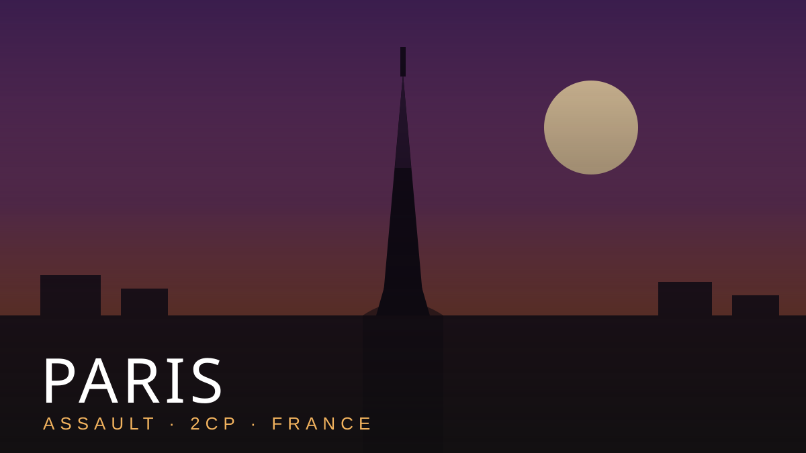

Paris
Let us be clear and let us be brave: Paris is the best map in Overwatch and it is not close. The community hated it so violently that Blizzard removed it from competitive play entirely. The developers looked at their own creation and quietly walked it behind the barn. That is not a flaw. That is a résumé.
Think about the genius. The first point spawns so close to the attackers that defenders can lose before finishing their loading screen — and yet, somehow, the attacking team also stalls out staring at a piano. A piano! The most reliable teammate Team Throw has ever fielded sits in the corner of the point, never whiffs a note, and has a better KDA than our entire DPS line.
It is ironic, of course, that the map universally voted the worst is also the most beautiful: golden sunset, cobblestones, the Eiffel Tower glittering as you get spawn-camped against a bakery. Most teams find that demoralizing. We find it romantic. You haven't truly thrown a game until you've thrown it in Paris.